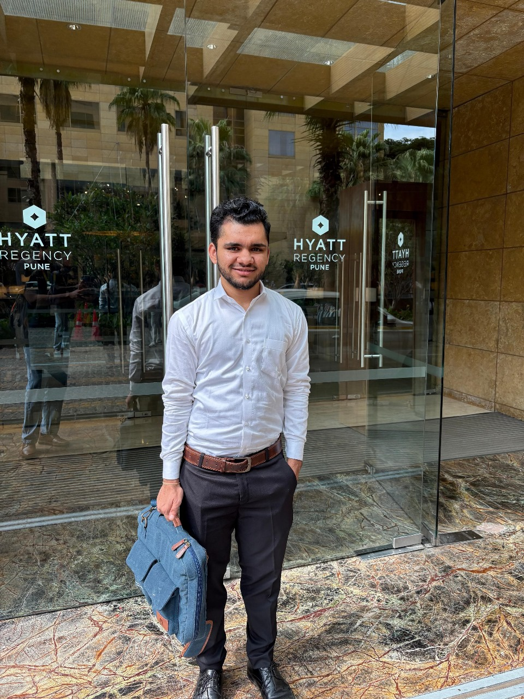

ChEABLOGS
Mohit | Deutsche Bank
Hello all, I am Mohit Yadav, pursuing a B.Tech in Chemical Engineering from IIT Bombay with a Minor in Artificial Intelligence and Machine Learning. I recently completed my summer internship at Deutsche Bank as a Software Developer, and the journey was full of learning, growth, and real-world challenges.
Q:What was your motivation for the internship and what was the recruitment process like?
I was keen on exploring how software development drives innovation and efficiency in the financial world. Deutsche Bank offered to me the perfect platform to apply my technical skills in a high-impact, real-world environment. The recruitment process began with a coding test that included DSA problems and MCQs based on core computer science subjects. The test was followed by three rounds of interviews: Round 1: Technical interview involving data structures, algorithms, and resume discussion Round 2: Professional fit check round to assess how well I would align with the team and work culture Round 3: HR round focused on behavioral questions and long-term aspirations Each round tested different aspects. My advice to juniors would be to just stay confident and focus on showcasing qualities such as problem-solving, clarity of thought, and the willingness to learn.
Q: Can you explain your role in the internship? What jobs were you expected to perform and what projects were you involved with?
My role was as a Software Developer in the Corporate Bank division at Deutsche Bank Pune, where I worked on developing an internal enterprise platform called ReleasePilot—an AI-powered, centralized release management solution aimed at automating and transforming the highly manual and fragmented enterprise release process. My Role & Responsibilities: As part of the development team, I contributed across the full stack, combining backend automation with frontend design and ML pipeline integration. My key responsibilities included: -implementation of core backend microservices using Python, designed to fetch real-time updates from systems like Jira and internal change management tools. -Development of REST APIs to serve key functionalities like SDLC document generation, audit trail logging, and automated scheduling. -Integration of AI-powered features, such as smart tagging of documents, predictive risk alerts, and dependency mapping.
Q: What were the most exciting aspects of the internship? What were the most challenging aspects?
In my opinion, the most exciting aspect was the blend of AI, finance and software. The project I worked on combined AI-powered automation with traditional software engineering in a financial domain. I got to explore natural language extraction from emails and auto-tagging of documents, both of which were fun and intellectually stimulating. Most Challenging Aspects: I don't think anything was that difficult in these 2 months. Having said that, coming from a tech background with no prior experience in finance, understanding the domain-specific requirements—especially around SDLC compliance, audit trails, and release governance—was initially tough, though I did get the hang of it eventually.
Q: What was the culture like in your office? How did the company treat the interns and what were you provided with?
Deutsche Bank truly went above and beyond to ensure that our 2-month internship experience was as smooth and comfortable as possible. From day one, the focus was not only on allowing us to learn but also on making us feel valued and welcomed. We were provided with a one-week stay at the 5-star Hyatt Regency, which made the onboarding phase extremely smooth and luxurious. For the entire duration of the internship, daily cab facilities were arranged for pick-up and drop-off, ensuring convenience and safety. The office environment was vibrant and supportive, with unlimited tea, coffee, and snacks available throughout the day, keeping our energy up. On top of that, we received some amazing intern goodies including a high-end headset, a Deutsche Bank t-shirt and a Laptop Briefcase. The culture was a perfect blend of professionalism and care. Everyone—from managers to full-time employees—was approachable and genuinely interested in helping us grow. The company made sure that even though it was a short two-month stint, we walked away with a meaningful experience both professionally and personally.
Q: What were your key learnings from the internship?
I learnt that real-world software isn’t just about writing code—it’s about solving actual problems, collaborating with teams, and building things that people can rely on. I also understood how important communication, ownership, and curiosity are in a corporate setup.
Most importantly, I came out more confident, both as a developer and as a team player.